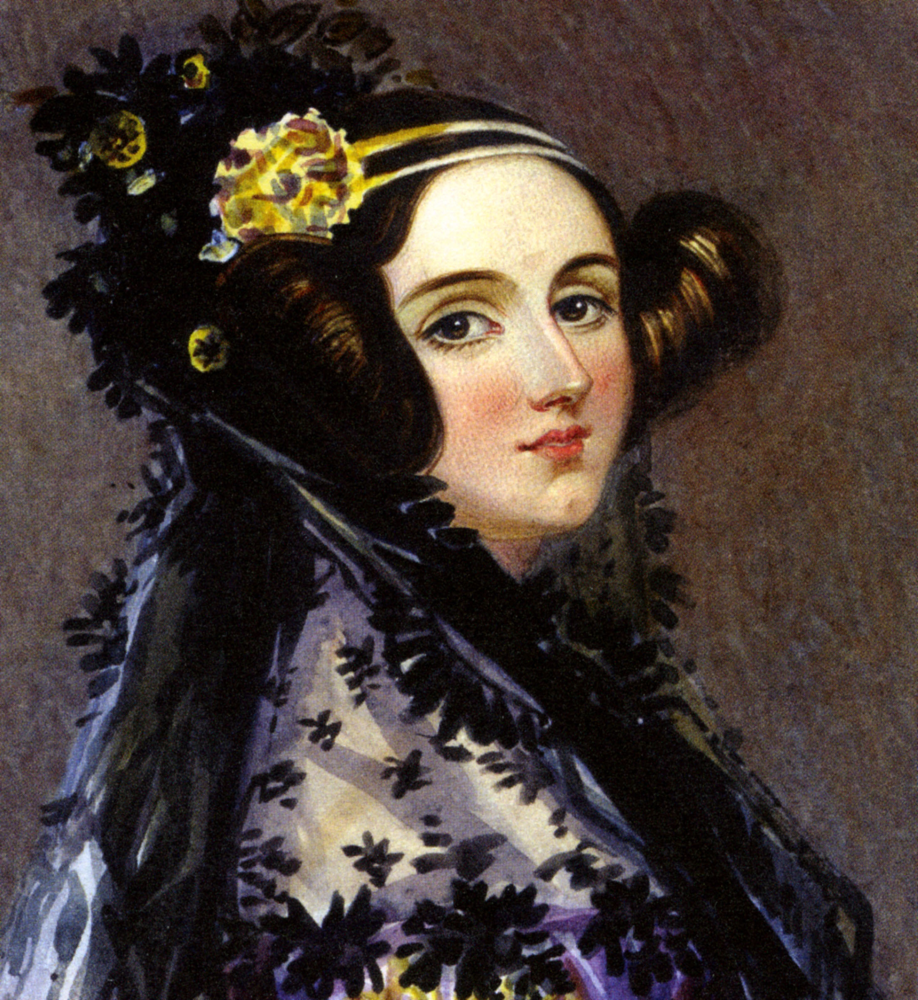

Ada Lovelace
Ada Lovelace fue una matemática y escritora británica, conocida por su trabajo enla máquina analítica de Charles Babbge.
Es considerada una de las primeras personas en desarollar un algoritmo para ser pocesado por un máquina, sentando bases de la progrmación moderna.
A pesar de las difilcultades de su tiempo, su trabajo sigue siendo inspirador para generaciones de científics y matemáticos.
Hitos importantes:
- Nacimeinto en 1815
- Colaboración con Charles Babbge en 1833
- Publicación de sus notas sobre la máquina analítica en 1843.